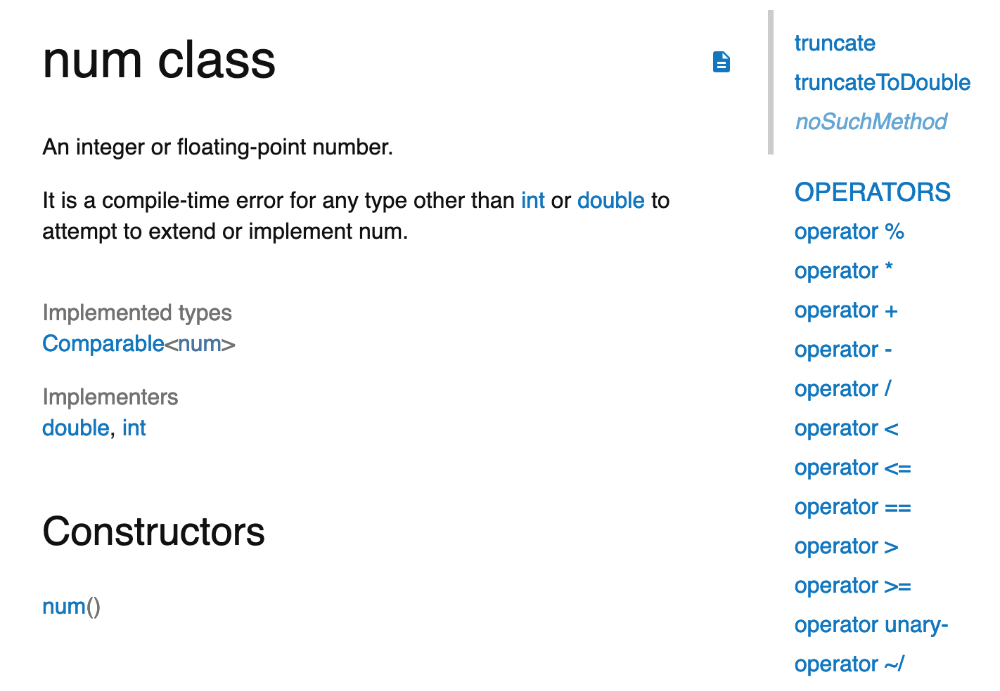

你好，我是陈航。
在专栏的第 2 篇预习文章“Dart 语言概览”中，我们简单地认识了 Dart 这门优秀的程序语言。那么，Dart 与其他语言究竟有什么不同呢？在已有其他编程语言经验的基础上，我又如何快速上手呢？
今天，我们就从编程语言中最重要的组成部分，也就是基础语法与类型变量出发，一起来学习 Dart 吧。
Dart 初体验
为了简单地体验一下 Dart，我们打开浏览器，直接在repl.it 新建一个 main.dart 文件就可以了（当然，你也可以在电脑安装 Dart SDK，体验最新的语法）。
下面是一个基本的 hello world 示例，我声明了一个带 int 参数的函数，并通过字符串内嵌表达式的方式把这个参数打印出来：
printInteger(int a) { print('Hello world, this is $a.'); } main() { var number = 2019; printInteger(number); }然后，在编辑器中点击“run”按钮，命令行就会输出：
Hello world, this is 2019.和绝大多数编译型语言一样，Dart 要求以 main 函数作为执行的入口。
在知道了如何简单地运行 Dart 代码后，我们再来看一下 Dart 的基本变量类型。
Dart 的变量与类型
在 Dart 中，我们可以用 var 或者具体的类型来声明一个变量。当使用 var 定义变量时，表示类型是交由编译器推断决定的，当然你也可以用静态类型去定义变量，更清楚地跟编译器表达你的意图，这样编辑器和编译器就能使用这些静态类型，向你提供代码补全或编译警告的提示了。
在默认情况下，未初始化的变量的值都是 null，因此我们不用担心无法判定一个传递过来的、未定义变量到底是 undefined，还是烫烫烫而写一堆冗长的判断语句了。
Dart 是类型安全的语言，并且所有类型都是对象类型，都继承自顶层类型 Object，因此一切变量的值都是类的实例（即对象），甚至数字、布尔值、函数和 null 也都是继承自 Object 的对象。
Dart 内置了一些基本类型，如 num、bool、String、List 和 Map，在不引入其他库的情况下可以使用它们去声明变量。下面，我将逐一和你介绍。
num、bool 与 String
作为编程语言中最常用的类型，num、bool、String 这三种基本类型被我放到了一起来介绍。
Dart 的数值类型 num，只有两种子类：即 64 位 int 和符合 IEEE 754 标准的 64 位 double。前者代表整数类型，而后者则是浮点数的抽象。在正常情况下，它们的精度与取值范围就足够满足我们的诉求了。
int x = 1;int hex = 0xEEADBEEF;double y = 1.1;double exponents = 1.13e5;int roundY = y.round();除了常见的基本运算符，比如 +、-、*、/，以及位运算符外，你还能使用继承自 num 的 abs()、round() 等方法，来实现求绝对值、取整的功能。
实际上，你打开官方文档或查看源码，就会发现这些常见的运算符也是继承自 num：

如果还有其他高级运算方法的需求 num 无法满足，你可以试用一下 dart:math 库。这个库提供了诸如三角函数、指数、对数、平方根等高级函数。
为了表示布尔值，Dart 使用了一种名为 bool 的类型。在 Dart 里，只有两个对象具有 bool 类型：true 和 false，它们都是编译时常量。
Dart 是类型安全的，因此我们不能使用if(nonbooleanValue) 或assert(nonbooleanValue)之类的在 JavaScript 可以正常工作的代码，而应该显式地检查值。
如下所示，检查变量是否为 0，在 Dart 中需要显示地与 0 做比较：
// 检查是否为 0.var number = 0;assert(number == 0);// assert(number); 错误Dart 的 String 由 UTF-16 的字符串组成。和 JavaScript 一样，构造字符串字面量时既能使用单引号也能使用双引号，还能在字符串中嵌入变量或表达式：你可以使用 ${express} 把一个表达式的值放进字符串。而如果是一个标识符，你可以省略{}。
下面这段代码就是内嵌表达式的例子。我们把单词’cat’转成大写放入到变量 s1 的声明中：
var s = 'cat';var s1 = 'this is a uppercased string: ${s.toUpperCase()}';为了获得内嵌对象的字符串，Dart 会调用对象的toString()方法。而常见字符串的拼接，Dart 则通过内置运算符“+”实现。比如，下面这条语句会如你所愿声明一个值为’Hello World!'的字符串：
var s2 = 'Hello' + ' ' + 'World!' ;对于多行字符串的构建，你可以通过三个单引号或三个双引号的方式声明，这与 Python 是一致的：
var s3 = """This is amulti-line string.""";List 与 Map
其他编程语言中常见的数组和字典类型，在 Dart 中的对应实现是 List 和 Map，统称为集合类型。它们的声明和使用很简单，和 JavaScript 中的用法类似。
接下来，我们一起看一段代码示例。
- 在代码示例的前半部分，我们声明并初始化了两个 List 变量，在第二个变量中添加了一个新的元素后，调用其迭代方法依次打印出其内部元素；
- 在代码示例的后半部分，我们声明并初始化了两个 Map 变量，在第二个变量中添加了两个键值对后，同样调用其迭代方法依次打印出其内部元素。
var arr1 = ["Tom", "Andy", "Jack"];var arr2 = List.of([1,2,3]);arr2.add(499);arr2.forEach((v) => print('${v}')); var map1 = {"name": "Tom", 'sex': 'male'}; var map2 = new Map();map2['name'] = 'Tom';map2['sex'] = 'male';map2.forEach((k,v) => print('${k}: ${v}'));容器里的元素也需要有类型，比如上述代码中 arr2 的类型是List<int>，map2 的类型则为Map<String, String>。Dart 会自动根据上下文进行类型推断，所以你后续往容器内添加的元素也必须遵照这一类型。
如果编译器自动推断的类型不符合预期，我们当然可以在声明时显式地把类型标记出来，不仅可以让代码提示更友好一些，更重要的是可以让静态分析器帮忙检查字面量中的错误，解除类型不匹配带来的安全隐患或是 Bug。
以上述代码为例，如果往 arr2 集合中添加一个浮点数arr2.add(1.1)，尽管语义上合法，但编译器会提示类型不匹配，从而导致编译失败。
和 Java 语言类似，在初始化集合实例对象时，你可以为它的类型添加约束，也可以用于后续判断集合类型。
下面的这段代码，在增加了类型约束后，语义是不是更清晰了？
var arr1 = <String>['Tom', 'Andy', 'Jack'];var arr2 = new List<int>.of([1,2,3]);arr2.add(499);arr2.forEach((v) => print('${v}'));print(arr2 is List<int>); // true var map1 = <String, String>{'name': 'Tom','sex': 'male',};var map2 = new Map<String, String>();map2['name'] = 'Tom';map2['sex'] = 'male';map2.forEach((k,v) => print('${k}: ${v}')); print(map2 is Map<String, String>); // true常量定义
如果你想定义不可变的变量，则需要在定义变量前加上 final 或 const 关键字：
- const，表示变量在编译期间即能确定的值；
- final 则不太一样，用它定义的变量可以在运行时确定值，而一旦确定后就不可再变。
声明 const 常量与 final 常量的典型例子，如下所示：
final name = 'Andy';const count = 3; var x = 70; var y = 30;final z = x / y;可以看到，const 适用于定义编译常量（字面量固定值）的场景，而 final 适用于定义运行时常量的场景。
总结
通过上面的介绍，相信你已经对 Dart 的基本语法和类型系统有了一个初步的印象。这些初步的印象，有助于你理解 Dart 语言设计的基本思路，在已有编程语言经验的基础上快速上手。
而对于流程控制语法：如if-else、for、while、do-while、break/continue、switch-case、assert，由于与其他编程语言类似，在这里我就不做一一介绍了，更多的 Dart 语言特性需要你在后续的使用过程中慢慢学习。在我们使用 Dart 的过程中，官方文档是我们最重要的学习参考资料。
恭喜你！你现在已经迈出了 Dart 语言学习的第一步。接下来，我们简单回顾一下今天的内容，以便加深记忆与理解：
- 在 Dart 中，所有类型都是对象类型，都继承自顶层类型 Object，因此一切变量都是对象，数字、布尔值、函数和 null 也概莫能外；
- 未初始化变量的值都是 null；
- 为变量指定类型，这样编辑器和编译器都能更好地理解你的意图。
思考题
对于集合类型 List 和 Map，如何让其内部元素支持多种类型（比如，int、double）呢？又如何在遍历集合时，判断究竟是何种类型呢？
欢迎你在评论区给我留言分享你的观点，我会在下一篇文章中等待你！感谢你的收听，也欢迎你把这篇文章分享给更多的朋友一起阅读。

COMMUNITY NOTES
读者评论
思考题：Dart 是支持泛型的，所以可以使用形如 List<dynamic> 和 Map<String, dynamic> 为集合添加不同类型的元素，遍历时判断类型用 is 关键字。
老师，能详细解释下final和const吗。你说“const，表示变量在编译期间即能确定的值； final 则可以在运行时确定值”。那是否能理解为：在编译期间能确定的值 用const或者用final修饰都可以，但是在运行时确定的值，只能用final修饰？？
runtimeType 判断
所有皆为对象，就可以通过反射机制获取对象的类型，不过，list和map不做类型约束的话，在读取里面数据会有很多坑，代码也不够健壮
抛砖引玉哈，直接拿各个item的runtimeType属性，简单代码如下main() { var arr = [1,2,'s']; arr.forEach( (v) => print('The value is ${v}, and the type is ${v.runtimeType}') );}
可以使用List<dynamic> 和 Map<dynamic>支持多种类型内部元素，遍历集合时，可以根据泛型确认数据类型
帮忙解释一下评论区中Dynamic？为啥不建议用这个？
升级到最新的flutter 版本，打包生成ipa，app打开是空白的，请教一下，这个是什么原因呢？
类，方法参数，返回值都可以指定泛型，判断单个元素的类型可以使用is